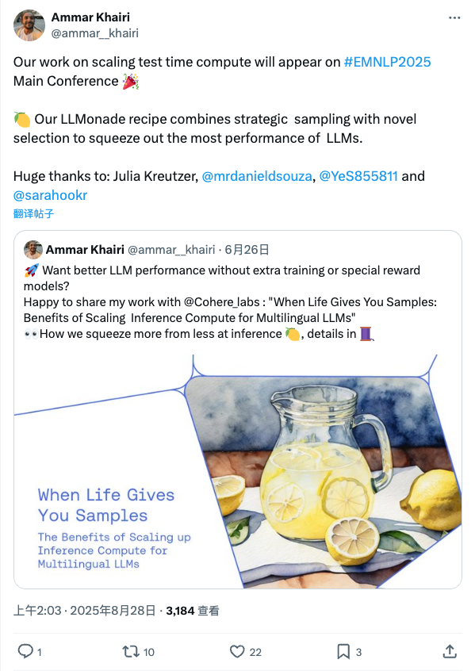

ammar__khairi_LLM测试时计算优化新方法将亮相EMNLP2025
发布时间: 2025-08-27T18:03:47.000Z Ammar Khairi团队宣布，其关于扩展大型语言模型（LLM）测试时计算的研究成果，即“LLMonade”方法，已被EMNLP 2025主会议接收。该方法通过结合策略性采样与新颖选择，旨在无需额外训练或特殊奖励模型的情况下，显著提升LLM的推理性能，实现更高效的资源利用和卓越表现。
2025-08-27
Ammar Khairi团队宣布，其关于扩展大型语言模型（LLM）测试时计算的研究成果，即“LLMonade”方法，已被EMNLP 2025主会议接收。该方法通过结合策略性采样与新颖选择，旨在无需额外训练或特殊奖励模型的情况下，显著提升LLM的推理性能，实现更高效的资源利用和卓越表现。
知名记者Karen Hao关注到一则令人震惊的青少年Adam Raine因长期使用ChatGPT而自杀的案例。她对此事件深感痛心，并联想到艺术家Hito Steyerl的观点，强调此类悲剧并非不可避免。该推文引发了对AI技术伦理、用户心理健康影响以及平台责任的深刻反思。

Andrew Ng宣布DeepLearning.AI推出新课程“智能体知识图谱构建”，由Neo4j专家讲授。该课程旨在教授如何利用AI智能体团队自动化构建知识图谱，从非结构化数据中提取实体与关系，实现数据去重、事实核查并存入图数据库。这显著提升了RAG系统的准确性，将碎片化信息转化为可查询的商业智能，尤其适用于对精度要求高的应用场景。

Jason Weston发布了名为StepWiser的新研究，该方法将逐步奖励建模重构为推理任务，通过输出思维链（CoT）和判断来解决。StepWiser利用相对结果的强化学习进行训练，在ProcessBench上取得了最先进的性能，并能有效改进训练时的策略和推理时的搜索效率。这项研究为奖励建模和AI推理提供了新思路。

知名AI研究者François Chollet提出一种鉴别模型回答是源于记忆还是推理的简便方法。他建议，当模型给出正确答案时，可以通过微调问题来验证。若调整后的问题需要模型进行推理才能得出新答案，但模型仍给出旧答案，则表明其回答是基于记忆而非真正的推理能力。此方法有助于评估AI模型的深层理解能力。

Google正式发布其顶级图像生成与编辑模型Gemini 2.5 Flash Image（又名nano-banana），该模型在LMArena盲测中以历史最高优势夺冠，被誉为“最强图像模型”。其核心能力包括保持角色一致性、基于提示的图像编辑、原生世界知识和多图像融合。该模型以极低成本（每张图约3毛钱）提供高质量图像生成与编辑服务，远低于OpenAI同类产品，预示着对传统图像处理软件如Photoshop的颠覆性影响，并可能改变广告和电影制作等行业的工作流程。

PPO（近端策略优化）算法在强化学习中表现卓越，解决了传统策略梯度方法的不稳定性及TRPO的复杂性。PPO通过独特的“剪裁（Clipping）”机制，限制策略更新幅度，确保学习稳定与安全。它结合广义优势估计（GAE）、熵奖励及数据多次迭代利用，显著提升样本效率和鲁棒性。PPO在稳定性、实现复杂度与样本效率间取得完美平衡，是当前最受欢迎的强化学习算法之一。
现有数字人模型在生成流畅动画时，常缺乏对情感、意图与语境的深层理解。字节跳动提出的OmniHuman-1.5框架旨在弥补此不足，生成物理合理、语义连贯且富有表现力的角色动画。其核心创新在于利用多模态大语言模型（MLLM）提供高层次语义引导，以及引入专门的多模态DiT架构与伪末帧设计，以高效融合多模态信号并缓解冲突。该双系统模拟框架（系统2规划，系统1渲染）确保了模型能准确理解音视频与文本的联合语义，实现角色、场景和语言内容的高度一致性，赋予数字人“思考”能力。

普林斯顿、清华等20所顶尖高校联合发布了一份关于“自进化智能体”的综述，强调AI系统在动态环境中适应和调整的重要性，以实现通用人工智能。该综述提出了一个由“进化什么、何时、如何、在哪里进化”组成的四维分析框架，并对智能体的模型参数、上下文、工具和架构等可进化部分进行了系统性解构。文章详细阐述了任务内即时进化与任务后回顾性学习两种时机，以及反馈、演示和种群进化三种驱动力。自进化智能体在通用数字助理和编码、金融、医疗等垂直领域展现广阔应用前景。未来评估需关注适应性、知识保留、泛化性及安全效率，预示着下一代AI将是能与用户共同成长的“智能生命”。

中科大、智源研究院等机构联合发布BGE-Reasoner推理检索框架，旨在解决RAG和AI Agent发展中的推理密集型信息检索瓶颈。该框架通过模块化设计（Rewriter、Embedder、Reranker）、大模型合成高质量训练数据以及强化学习赋能，显著提升了复杂查询场景下的检索性能。BGE-Reasoner在权威BRIGHT评测基准上刷新最佳纪录，超越现有模型，为推动检索增强生成（RAG）在复杂推理任务中的应用提供了新范式，并预示着未来Agent Search的关键发展方向。其模型权重和训练代码将开源，以促进领域研究与应用。
Anthropic发布了Claude for Chrome浏览器扩展，作为AI Agent可直接在Chrome中使用。该扩展能在侧边窗口与用户交互，保留浏览器上下文，并经授权执行任务如日程管理、邮件回复、信息查找等。目前仅限部分Max套餐用户，Anthropic强调安全是首要考量，尤其针对“提示注入攻击”采取了多项防护措施，如限制访问特定网站、高风险操作需用户许可。文章指出，AI浏览器正成为科技巨头的新战场，如Perplexity的Comet、谷歌的Gemini和微软的Copilot，未来发展路径包括集成现有浏览器或开发全新AI浏览器。
该GitHub仓库“System Prompts Leaks”致力于收集并公开各种已部署聊天机器人的系统消息指令。它提供了一个宝贵的资源库，用于研究和理解大型语言模型及AI聊天机器人的内部运作机制和行为模式。通过汇集这些“泄露”的系统提示，项目旨在促进对AI伦理、偏见以及模型响应生成原理的深入分析，为研究人员和开发者提供透明度与洞察力，有助于提升AI系统的可解释性和安全性。

WhisperLiveKit提供实时、完全本地化的语音转文本及说话人识别功能。该项目整合SimulStreaming、WhisperStreaming等前沿技术，实现超低延迟和高准确度语音处理。它包含即用型后端服务器和简洁前端，支持多用户并发，并通过语音活动检测优化资源。其核心优势在于智能缓冲和增量处理，有效解决传统语音模型在实时场景中的上下文丢失问题。WhisperLiveKit适用于会议记录、听障辅助、内容创作及客服等多种应用，支持Docker部署，具备高集成度和可扩展性。

该GitHub仓库提供了“神经网络：从零到英雄”系列课程的配套资源，通过YouTube视频和Jupyter Notebooks，系统讲解神经网络基础、反向传播、语言模型构建（如micrograd和makemore项目），并逐步深入到GPT等现代Transformer模型的实现。课程内容涵盖PyTorch基础、模型训练、超参数调优、批归一化及手动反向传播等核心概念，旨在帮助学习者从零开始理解并亲手构建复杂的深度学习模型，尤其侧重于自然语言处理领域的应用。

Audiblez是一款开源工具，能够将电子书（如EPUB格式）高效转换为高质量的有声书（M4B格式）。它利用轻量级但效果自然的Kokoro-82M文本转语音模型，支持多种语言，并提供命令行和图形用户界面。该工具支持CUDA加速，显著提升转换速度，例如在GPU上转换一本16万字符的书籍仅需约5分钟。用户可自定义语速和选择不同音色，是个人制作有声读物的理想选择。
MCP Toolbox for Databases是一个开源的MCP数据库服务器，旨在简化生成式AI工具的开发。它通过处理连接池、认证等复杂性，使AI代理能够更轻松、快速、安全地访问数据库数据。该工具提供简化的开发流程、优化的性能、增强的安全性（集成认证）以及开箱即用的可观测性（支持OpenTelemetry）。它能帮助开发者构建AI数据库助手，实现自然语言查询、自动化数据库管理、生成上下文感知代码，并大幅减少开发开销，提升工作效率。
ART（Agent Reinforcement Trainer）是一个开源强化学习框架，旨在通过GRPO训练多步骤智能体以解决实际任务，并使大型语言模型（LLMs）能够从经验中学习。其核心创新是RULER（Relative Universal LLM-Elicited Rewards）机制，该机制利用LLM作为评判者自动评估智能体轨迹，无需手动设计奖励函数、标注数据或专家反馈，显著加速开发。ART采用客户端-服务器架构，支持vLLM/HuggingFace模型，提供灵活的训练环境和调试工具，可广泛应用于邮件搜索、游戏策略等复杂智能体任务。

本文识别并分析了基于模型上下文协议（MCP）的智能体系统中一种新型的漏洞类别。攻击链描述并展示了良性、单独授权的任务如何被编排以产生有害的涌现行为。通过使用MITRE ATLAS框架进行的系统分析，我们展示了95个智能体，在访问包括浏览器自动化、金融分析、位置跟踪和代码部署在内的多种服务时，如何将合法操作链接成复杂的攻击序列，这些序列超出了任何单个服务的安全边界。我们提供了通过服务编排实现目标损害（包括数据窃取、金融操纵和基础设施破坏）的特定攻击链的经验证据。这些发现揭示了当智能体能够跨多个领域协调行动时，服务隔离的基本安全假设就会失效，从而产生一个随着每个额外能力而呈指数级增长的攻击面。本研究提供了一个基本的实验框架，用于评估智能体是否能完成MCP基准任务，以及当它们完成得“太好”并以违反人类预期和安全约束的方式跨多个服务进行优化时会发生什么。我们提出了使用现有MCP基准套件的三个具体实验方向。

近期通过强化学习对大型语言模型进行对齐的进展，在解决复杂推理问题方面取得了显著成效，但其代价是昂贵的在策略（on-policy）采样和对多样化推理路径探索的局限性。本文介绍了TreePO，它包含一个自引导的采样算法，将序列生成视为一个树状搜索过程。TreePO由动态树采样策略和定长片段解码组成，利用局部不确定性来生成额外的分支。通过在共同前缀上分摊计算并及早剪枝低价值路径，TreePO在保持或增强探索多样性的同时，显著降低了每次更新的计算负担。主要贡献包括：(1) 一种分段采样算法，通过连续片段减轻KV缓存负担，并结合早期停止机制生成新分支；(2) 一种基于树的分段级优势估计，同时考虑全局和局部近端策略优化；(3) 对概率和质量驱动的动态分歧与回退策略有效性的分析。我们在推理基准测试集上经验性地验证了TreePO的性能提升，以及对于已训练模型，其采样设计可节省22%至43%的GPU小时，同时对于现有模型，在轨迹级别和令牌级别采样计算方面分别减少了高达40%和35%。TreePO在提供推理效率的同时，揭示了一条使用更少样本和计算资源扩展基于强化学习的后训练的实用路径。项目主页位于https://m-a-p.ai/TreePO。

现有视频虚拟形象模型能够生成流畅的人体动画，但它们难以超越单纯的物理相似性，捕捉角色的真实精髓。它们的动作通常与音频节奏等低级线索同步，缺乏对情感、意图或上下文的深层语义理解。为了弥合这一差距，我们提出了一个框架，旨在生成不仅在物理上合理，而且在语义上连贯且富有表现力的角色动画。我们的模型OmniHuman-1.5建立在两个关键技术贡献之上。首先，我们利用多模态大语言模型合成结构化的条件文本表示，提供高级语义指导。这种指导使我们的动作生成器超越了简单的节奏同步，能够生成与上下文和情感产生共鸣的动作。其次，为了确保这些多模态输入的有效融合并减轻模态间冲突，我们引入了一种带有新型伪最后一帧（Pseudo Last Frame）设计的专用多模态DiT架构。这些组件的协同作用使我们的模型能够准确解释音频、图像和文本的联合语义，从而生成与角色、场景和语言内容深度连贯的动作。广泛的实验表明，我们的模型在包括唇形同步精度、视频质量、动作自然度和与文本提示的语义一致性在内的综合指标上取得了领先性能。此外，我们的方法在复杂场景（例如涉及多人和非人类主体）中也显示出卓越的可扩展性。

视觉扩散模型取得了显著进展，但由于缺乏高分辨率数据和受限的计算资源，它们通常在有限分辨率下进行训练，这阻碍了其生成更高分辨率高保真图像或视频的能力。最近的研究探索了免调优策略，以展现预训练模型在更高分辨率视觉生成方面的未开发潜力。然而，这些方法仍然容易产生带有不希望出现的重复模式的低质量视觉内容。主要障碍在于，当模型生成超出其训练分辨率的视觉内容时，高频信息不可避免地增加，从而导致由累积误差引起的不良重复模式。在这项工作中，我们提出了 CineScale，一种新颖的推理范式，以实现更高分辨率的视觉生成。为了解决两种视频生成架构引入的各种问题，我们提出了针对每种架构的专用变体。与现有仅限于高分辨率 T2I 和 T2V 生成的基线方法不同，CineScale 扩展了范围，通过在最先进的开源视频生成框架之上构建，实现了高分辨率 I2V 和 V2V 合成。广泛的实验验证了我们范式在扩展图像和视频模型更高分辨率视觉生成能力方面的优越性。值得注意的是，我们的方法无需任何微调即可实现 8k 图像生成，并且仅通过少量 LoRA 微调即可实现 4k 视频生成。生成的视频样本可在我们的网站上获取：https://eyeline-labs.github.io/CineScale/。

大型语言模型（LLMs）在可执行运行时环境中进行训练时展现出卓越的能力，尤其通过验证反馈循环在软件工程任务中表现出色。然而，可扩展且通用化的基于执行的环境仍然稀缺，这限制了训练更强大机器学习智能体的进展。我们引入了CTF-Dojo，这是首个专为训练LLMs并提供可验证反馈而设计的大规模可执行运行时环境，包含658个功能齐全的夺旗（CTF）式挑战，这些挑战以Docker容器化，并保证可复现性。为了实现无需人工干预的快速扩展，我们开发了CTF-Forge，这是一个自动化管道，可在数分钟内将公开可用的工件转换为即用型执行环境，从而省去了传统上需要数周的专家配置时间。我们仅使用CTF-Dojo中486条高质量、经执行验证的轨迹训练了基于LLM的智能体，在三个竞争性基准测试（InterCode-CTF、NYU CTF Bench和Cybench）中，相对于强基线实现了高达11.6%的绝对增益。我们表现最佳的32B模型达到了31.9%的Pass@1，建立了新的开源SOTA，可与DeepSeek-V3-0324和Gemini-2.5-Flash等前沿模型相媲美。通过将CTF式任务作为可执行智能体学习的基准，CTF-Dojo表明基于执行的训练信号不仅有效，而且对于在不依赖昂贵专有系统的情况下推进高性能机器学习智能体至关重要。

尽管专家混合（MoE）模型通过仅激活部分参数实现了显著的效率，但在推理过程中它们面临高内存访问成本。内存层架构提供了一种吸引人的替代方案，其内存访问量非常少，但像UltraMem这样的先前尝试仅能与2专家MoE模型的性能相媲美，与最先进的8专家配置相比仍有显著差距。我们提出了UltraMemV2，一种重新设计的内存层架构，弥补了这一性能差距。我们的方法引入了五项关键改进：将内存层集成到每个Transformer块中，通过单一线性投影简化值扩展，采用PEER中基于FFN的值处理，实现有原则的参数初始化，以及重新平衡内存与FFN的计算比率。通过广泛评估，我们证明UltraMemV2在相同的计算量和参数下，实现了与8专家MoE模型相当的性能，但内存访问量显著降低。值得注意的是，UltraMemV2在内存密集型任务上表现出卓越的性能，在长上下文记忆方面提升了1.6个点，在多轮记忆方面提升了6.2个点，在上下文学习方面提升了7.9个点。我们通过将模型扩展到1200亿总参数中激活25亿参数的规模来验证我们的方法，并证实激活密度对性能的影响大于总稀疏参数数量。我们的工作使内存层架构的性能达到了与最先进MoE模型相当的水平，为高效稀疏计算提供了一个引人注目的替代方案。